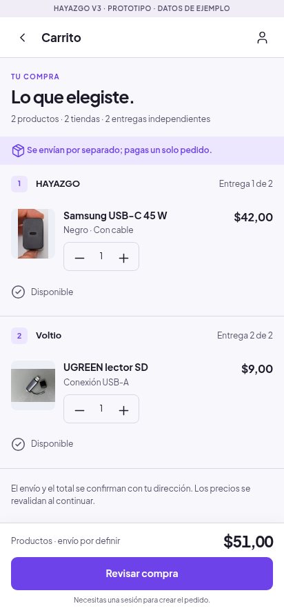
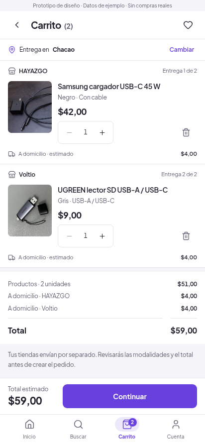
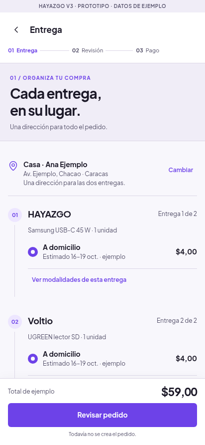
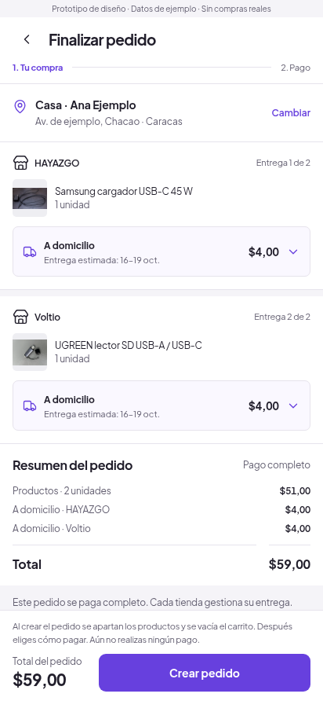
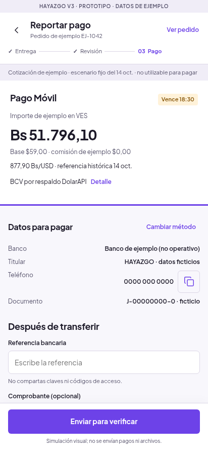
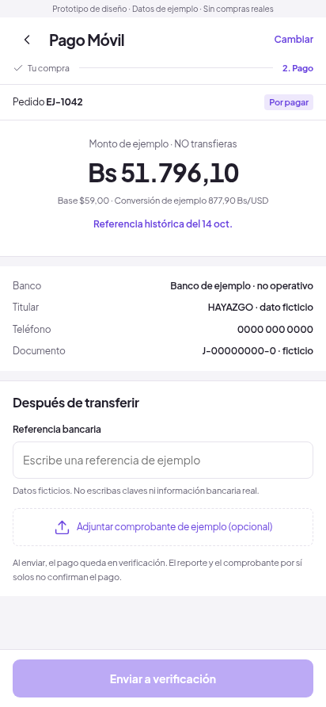

Capturas WEB originales a412×892. La fuente V3 es la copia actual del repositorio; el enlace Work no fue accesible. No son pruebas Android. No se retocaron capturas.
Recorrer V4 · Fotografías, autoría y licencias
Mismos dos productos y cantidades. V3 muestra subtotal51 y envío por definir; V4 muestra destino de ejemplo y envío estimado8, total59. No se cambiaron precios unitarios.


V4 reúne dirección, ambas modalidades, resumen y creación en una pantalla. V3B separaba entrega y revisión.


Mismo pedido de ejemplo59USD. La conversión histórica sigue siendo un ejemplo, sin instrucciones para transferir dinero real.

